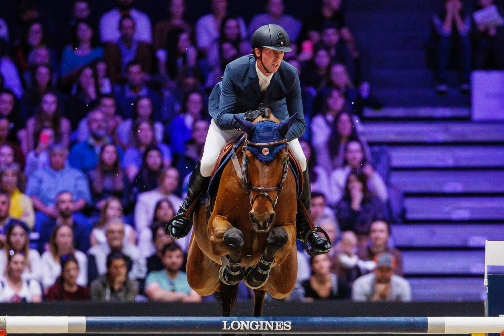

Gran Bretaña deposita 15 binomios como nominados para el Mundial de Salto de Aachen
British Equestrian y British Showjumping han oficializado los 15 binomios que Gran Bretaña incluye en su lista de nominados para el Mundial de Salto FEI 2026, que se disputará en Aachen entre el 11 y el 23 de agosto. La federación británica ha optado por una nómina larga que combina jinetes con medalla olímpica…

British Equestrian y British Showjumping han oficializado los 15 binomios que Gran Bretaña incluye en su lista de nominados para el Mundial de Salto FEI 2026, que se disputará en Aachen entre el 11 y el 23 de agosto. La federación británica ha optado por una nómina larga que combina jinetes con medalla olímpica reciente, veteranos con pedigrí en Copa de Naciones y jóvenes de la nueva generación.
El grupo lo lidera el vencedor olímpico Ben Maher, que aparece con hasta tres caballos: Catelly, Enjeu de Grisien y Point Break. El clan Whitaker vuelve a colar tres apellidos en el mismo listado: el veterano John, con Equine America Unick du Francport y Sharid; su hijo Robert; y el sobrino Jack, de 24 años, con Jack JL, propiedad de Candice Reilly. Es la primera nominación mundialista para Jack Whitaker.
La comisión de seleccionadores utilizará los próximos concursos de la Longines League of Nations, el CSIO5* de Rotterdam y la fase final de la temporada europea para acotar el equipo definitivo de cinco titulares más reservas. El plazo para depositar en la FEI la nómina definitiva vence el 27 de julio, común a todas las federaciones.
Gran Bretaña llega a Aachen con la vitola de subcampeona del mundo por equipos en Herning 2022 y con el objetivo declarado de repetir podio. El Mundial servirá además como primer gran filtro clasificatorio hacia Los Ángeles 2028.
— Redacción de Hípica al Día